Pre-Set Antena
1º
Coloque IP fixo na conexão local para:
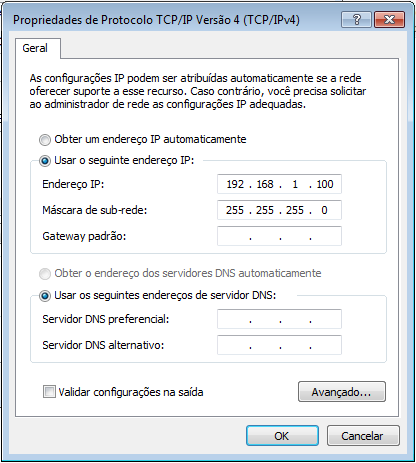
2º
Coloque o seguinte IP no seu navegador:
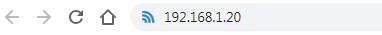
3º
No erro de privacidade que irá aparecer no navegador clique em 'Avançado':
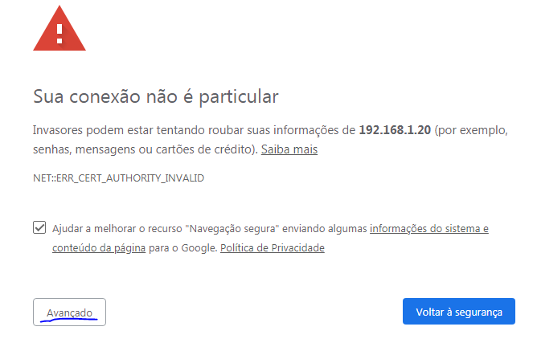
4º
Em seguida clique em 'Ir para 192.168.1.20 (não seguro)':
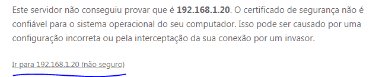
5º
Na tela de 'Iniciar Sessão' preenche a informações conforme imagem abaixo, clque em aceitar termos de utilização e clique em 'Iniciar Sessão':
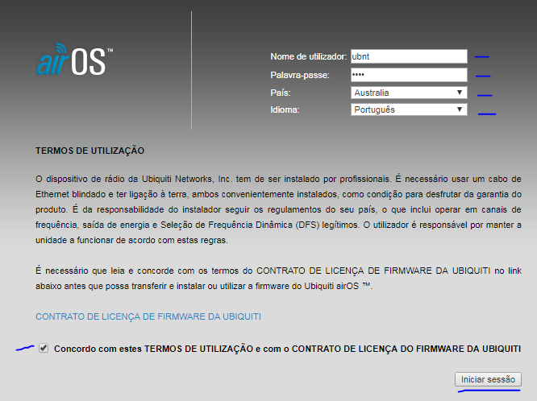
Nome do Utilizador: ubnt
Senha: ubnt
País: Australia
Idioma: Português
6º
No menu superior vai até a opção 'System':
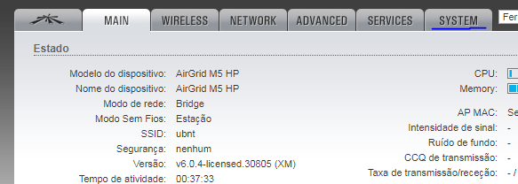
7º
Clique em 'Escolher Arquivo' para selecionar a versão mais recente do firmware:
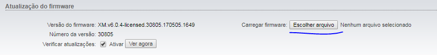
8º
Depois de selecionado o arquivo de firmware clique em 'Carregar':
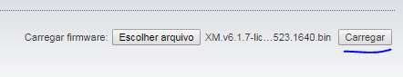
9º
Com o arquivo de configuração carregado clique em 'Atualização':
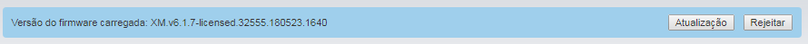
10º
Aguarde até a atualização terminar:
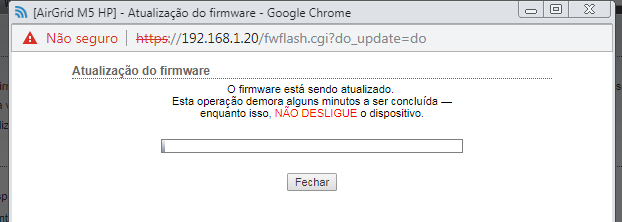
11º
Depois de atualizada a página será redirecionada para o login novamente, preencha o login a clique em 'Iniciar Sessão':
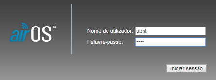
Nome do Utilizador: ubnt
Senha: ubnt
12º
No menu superior vai na aba 'System', agora vamos selecionar o arquivo de configuração, vá até o final da página e clique em 'Escolher Arquivo':
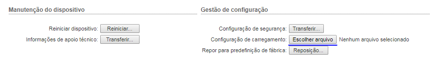
13º
Com o arquivo de configuração carregado clique em 'Carregar':
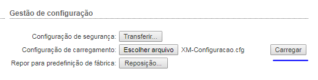
14º
Depois clique em 'Aplicar':
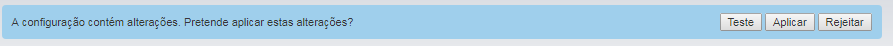
15º
Enquanto a antena está aplicando as configurações troque o IP da máquina para automático:
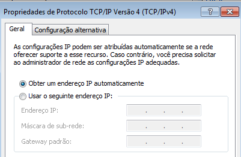
16º
Coloque o seguinte IP no seu navegador:
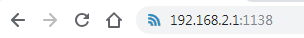
17º
No erro de privacidade que irá aparecer no navegador clique em 'Avançado':
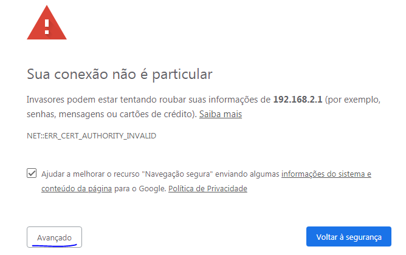
18º
Em seguida clique em 'Ir para 192.168.2.1 (não seguro)':
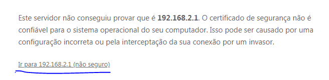
19º
Preencha o login a clique em 'Iniciar Sessão':
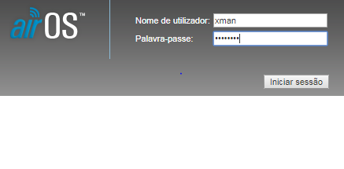
Nome do Utilizador: xman
Senha: life90&*